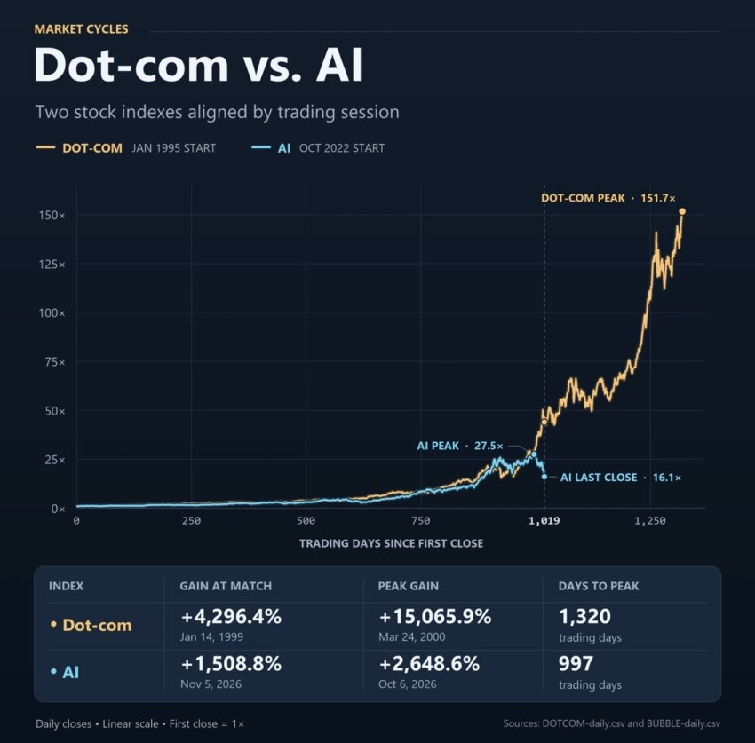

인류 역사상 가장 미친 버블을 갖고오네 ㅋㅋㅋㅋㅋㅋㅋ
닷컴버블 이땐 진짜로 그냥 김개똥닷컴 이딴식으로 이름짓고 상장하면 돈 안벌어도 몇천억이 들어왔다고. 진짜 그냥 기업활동을 안해도.
열심히 일했는ㄷ 적자나고 마이너스났어요ㅠㅠ 그런게아니라
진짜로 그냥 매출이 0이라도 그냥 돈을 퍼줬음. 사업 안하고 그냥 계획서만 올리거나 도메인만 띡 올리고 홈페이지만 띡 만들면 진짜 미친듯이 주가가 올렸다니까? ㅋㅋㅋㅋㅋㅋ
지금도 투자 과잉이니 마니 말은 나와도
닷컴버블급은 아님. 닷컴이랑 서브프라임 터지면서 금융권 규제도 이때랑 비교도 안되게 단단해짐
이때랑 비교하려면 7월때 밑으로 쏘는게 아니고 그대로 위로 치솟아서 이때까지 오른거의 2배가 더 올라야 비견 가능한 수준임
걍 호들갑 존나떨길래 같잖아서 글써보
댓글
수집 당시 댓글 233개
· ㅇㅇ · 11.07 15:59:36
ㅇㅇ · 11.07 14:49:55
삭제됨 · 11.07 14:50:52
· 번개장터 · 11.07 14:55:26
· ㅁㅁ · 11.07 15:43:27
· ㅇㅇ · 11.07 16:13:48
ㅇㅇ · 11.07 14:51:29
ㅇㅇ · 11.07 14:56:26
ㅇㅇ · 11.07 14:58:47
· ㅇㅇ · 11.07 15:00:28
· ㅇㅇ · 11.07 15:23:38
ㅇㅇ · 11.07 14:59:54
ㅇㅇ · 11.07 15:01:00
· ㅇㅇ · 11.07 15:02:04
· ㅇㅇ · 11.07 15:03:10
· ㅇㅇ · 11.07 15:03:15
· ㅇㅇ · 11.07 15:54:31
· ㅇㅇ · 11.07 17:31:51
· ㅇㅇ · 11.07 17:37:18
ㅇㅇ · 11.07 15:01:52
· ㅇㅇ · 11.07 15:03:45
ㅇㅇ · 11.07 15:04:39
ㅇㅇ · 11.07 15:04:39
ㅇㅇ · 11.07 15:05:04
ㅇㅇ · 11.07 15:05:09
ㅇㅇ · 11.07 15:06:06
ㅇㅇ · 11.07 15:06:58
ㅇㅇ · 11.07 15:07:28
· ㅇㅇ · 11.07 15:09:08
ㅇㅇ · 11.07 15:08:25
ㅇㅇ · 11.07 15:10:29
ㅇㅇ · 11.07 15:10:54
· ㅇㅇ · 11.07 15:11:01
ㅇㅇ · 11.07 15:11:00
ㅇㅇ · 11.07 15:11:59
· ㅇㅇ · 11.07 15:18:51
· ㅇㅇ · 11.07 15:20:52
ㅇㅇ · 11.07 15:12:18
· ㅇㅇ · 11.07 15:15:16
· ㅇㅇ · 11.07 15:16:32
ㅇㅇ · 11.07 15:20:04
ㅇㅇ · 11.07 15:20:56
ㅇㅇ · 11.07 15:23:04
ㅇㅇ · 11.07 15:23:12
· ㅇㅇ · 11.07 15:32:05
ㅇㅇ · 11.07 15:24:02
· ㅇㅇ · 11.07 15:24:50
ㅇㅇ · 11.07 15:26:48
ㅇㅇ · 11.07 15:27:51
키나루디안마기 · 11.07 15:29:08
ㅇㅇ · 11.07 15:30:36
돌아온애우 · 11.07 15:32:17
00 · 11.07 15:33:01
ㅇㅇ · 11.07 15:34:14
ㅇㅇ · 11.07 15:35:51
· ㅇㅇ · 11.07 15:37:51
· 해적선. · 11.07 15:39:24
· ㅇㅇ · 11.07 15:40:33
ㅇㅇ · 11.07 15:36:52
ㅇㅇ · 11.07 15:36:54
ㅇㅇ · 11.07 15:37:38
· ㅇㅇ · 11.07 15:39:55
· ㅇㅇ · 11.07 16:06:37
ㅇㅇ · 11.07 15:46:43
JungNu · 11.07 15:49:41
ㅇㅇ · 11.07 15:50:21
· 지잡무직영애 · 11.07 16:02:42
· ㅇㅇ · 11.07 16:10:36
ㅇㅇ · 11.07 16:04:57
ㅇㅇ · 11.07 16:07:05
원또 · 11.07 16:09:52
ㅇㅇ · 11.07 16:24:53
ㅇㅇ · 11.07 16:29:31
ㅇㅇ · 11.07 16:32:57
· ㅇㅇ · 11.07 18:05:12
pyuru · 11.07 16:38:22
ㅇㅇ · 11.07 16:50:41
ㅇㅇ · 11.07 16:52:04
ㅇㅇ · 11.07 16:53:31
ㅇㅇ · 11.07 16:54:51
oㅇoㅇ · 11.07 17:00:13
ㅇㅇ · 11.07 17:14:21
· ㅇㅇ · 11.07 17:17:10
· ㅇㅇ · 11.07 17:49:30
· ㅇㅇ · 11.07 17:52:41
· ㅇㅇ · 11.07 18:06:14
ㅇㅇ · 11.07 17:21:21
· ㅇㅇ · 11.07 17:23:16
· 주갤러 · 11.07 18:12:42
ㅇㅇ · 11.07 17:26:13
ㅇㅇ · 11.07 17:35:38
· ㅇㅇ · 11.07 17:50:54
· ㅇㅇ · 11.07 17:51:30
ㅇㅇ · 11.07 17:50:39
ㅇㅇ · 11.07 17:50:48
· ㅇㅇ · 11.07 17:50:55
ㅇㅇ · 11.07 17:52:37
ㅇㅇ · 11.07 18:02:43
ㅇㅇ · 11.07 18:04:32
ㅇㅇ · 11.07 18:14:58
ㅇㅇ8 · 11.07 12:50:19
하마베미나미 · 11.07 12:53:21
샤니랑 · 11.07 12:53:38
ㅇㅇ9 · 11.07 12:53:49
· ㅇㅇ · 11.07 13:28:23
봉평샘물 · 11.07 12:55:00
· ㅇㅇ · 11.07 13:33:08
ㅇㅇ · 11.07 12:55:30
ㅇㅇ10 · 11.07 12:57:16
· ㅇㅇ10 · 11.07 12:57:34
· ㅇㅇ · 11.07 14:36:42
· ㅇㅇ · 11.07 14:47:44
· ㅇㅇ · 11.07 14:50:34
· ㅇㅇ · 11.07 15:40:03
셀레스티얼 · 11.07 12:58:02
미니붕어빵 · 11.07 12:58:54
ㅇㅇ · 11.07 13:01:27
푸른꽃 · 11.07 13:04:42
ㅇㅇ · 11.07 13:06:45
ㅇㅇ · 11.07 13:08:24
ㅇㅁㅇ)っ · 11.07 13:10:25
ㅇㅇ11 · 11.07 13:12:22
ㅇㅇ13 · 11.07 13:16:53
WeißerSchnee · 11.07 13:23:53
· WeißerSchnee · 11.07 13:24:20
ㅇㅇ · 11.07 13:24:48
땨뗘(봇) · 11.07 13:26:05
황족 · 11.07 13:27:10
· 친일친미친중혐한 · 11.07 14:27:00
192.168.* · 11.07 13:29:11
ㅇㅇ · 11.07 13:29:26
ㅇㅇ · 11.07 13:29:38
· ㅇㅇ · 11.07 14:07:28
ㅇㅇ · 11.07 13:30:19
ㅇㅇ · 11.07 13:30:21
ㅇㅇ · 11.07 13:30:44
ㅇㅇ · 11.07 13:31:28
ㅇㅇ · 11.07 13:32:27
つついあやめのおっと · 11.07 13:34:25
ㅇㅇ · 11.07 13:35:17
ㅇㅇ · 11.07 13:36:25
· 친일친미친중혐한 · 11.07 14:28:30
· oo · 11.07 14:37:31
ㅇㅇ · 11.07 13:37:42
· ㅁ · 11.07 13:43:11
· ㅇㅇ · 11.07 13:56:06
· oo · 11.07 14:38:28
· oo · 11.07 14:38:55
ㅇㅇ · 11.07 13:38:53
팩트만말해요 · 11.07 13:41:31
· 팩트만말해요 · 11.07 13:43:14
· oo · 11.07 14:40:10
· 팩트만말해요 · 11.07 14:51:42
ㅇㅇ · 11.07 13:42:01
ㅇㅇ · 11.07 13:43:34
ㅇㅇ · 11.07 13:43:39
ㅇㅇ · 11.07 13:43:50
ㅇㅇ · 11.07 13:48:53
· ㅇㅇ · 11.07 18:28:33
ㅇㅇ · 11.07 13:48:55
ㅇㅇ · 11.07 13:50:39
ㅇㅇ · 11.07 13:51:08
ㅇㅇ · 11.07 13:51:10
dorosi · 11.07 13:54:11
ㅇㅇ · 11.07 13:55:15
· ㅇㅇ · 11.07 13:56:33
· ㅇㅇ · 11.07 13:56:34
ㅇㅇ · 11.07 13:55:16
· ㅇㅇ · 11.07 14:10:44
ㅇㅇ · 11.07 13:57:53
ㅇㅇ · 11.07 13:58:29
ㅇㅇ · 11.07 14:00:22
ㅇㅇ · 11.07 14:01:33
ㅇㅇ · 11.07 14:03:19
ㅇㅇ · 11.07 14:03:55
ㅇㅇ · 11.07 14:04:02
· 소설쟁이 · 11.07 14:07:13
ㅇㅇ · 11.07 14:07:55
ㅇ · 11.07 14:12:00
· ㅇㅇ · 11.07 14:52:02
· ㅇㅇ · 11.07 16:20:45
· ㅇ · 11.07 16:50:02
ㅇㅇ · 11.07 14:13:35
· ㅇㅇ · 11.07 17:24:58
ㅇㅇ · 11.07 14:14:54
ㅇㅇ · 11.07 14:16:24
ㅇㅇ · 11.07 14:17:03
ㅇㅇ · 11.07 14:20:54
ㅇㅇ · 11.07 14:20:57
친일친미친중혐한 · 11.07 14:25:00
· pyuru · 11.07 16:37:54
ㅇㅇ · 11.07 14:25:19
ㅇㅇ · 11.07 14:26:45
ㅇㅇ · 11.07 14:27:42
ㅇㅇ · 11.07 14:33:28
ㅇㅇ · 11.07 14:40:00
ㅇㅇ · 11.07 14:44:59
ㅇㅇ · 11.07 14:46:13
키리기리 · 11.07 14:47:56
ㅇㅇ · 11.07 14:49:21
ytl311 · 11.07 12:29:09
· ㅇㅇ · 11.07 14:02:42
ㅇㅇ1 · 11.07 12:29:47
· ㅇㅇ3 · 11.07 12:32:08
· ㅇㅇ · 11.07 12:34:02
· ㅇㅇ1 · 11.07 12:44:18
· ㅇㅇ14 · 11.07 13:21:27
· ㅇㅇ · 11.07 13:31:51
· ㅇㅇ · 11.07 13:43:40
· ㅇㅇ · 11.07 14:00:38
· 에갤러 · 11.07 14:18:04
· ㅇㅇ · 11.07 14:25:21
· ㅇㅇ · 11.07 14:35:57
· ㅇㅇ · 11.07 17:20:43
· ㅇㅇ · 11.07 17:21:20
ㅇㅇ2 · 11.07 12:30:18
· ㅇㅇ · 11.07 12:30:35
· oo · 11.07 14:35:19
ㅇㅇ · 11.07 12:31:07
· ㅇㅇ · 11.07 13:46:25
· ㅇㅇ · 11.07 14:22:37
· ㅇㅇ · 11.07 14:45:16
ㅇㅇ4 · 11.07 12:32:16
ㅇㅇ5 · 11.07 12:32:16
· 추세추종 · 11.07 12:44:46
· ㅇㅇ · 11.07 12:49:26
미주갤의망령 · 11.07 12:33:58
· ㅇㅇ · 11.07 12:35:04
ㅇㅇ6 · 11.07 12:37:50
· ㅇㅇ7 · 11.07 12:47:07
Futechs · 11.07 12:39:49
마이너스24억 · 11.07 12:46:25
♡♡♡♡♡ · 11.07 12:48:20